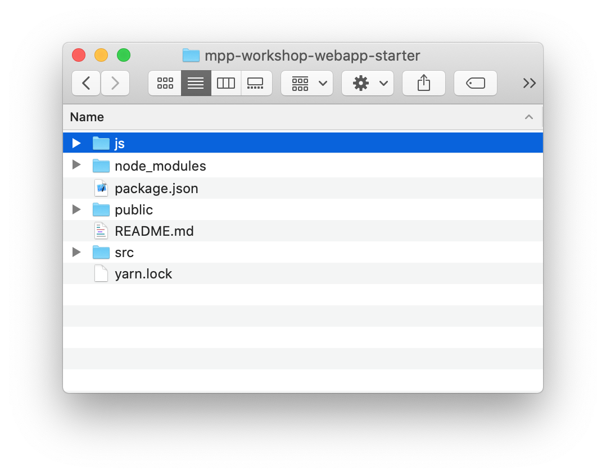

We are at the end of this workshop, you did it! Now is the time to play with dates! While we are waiting JetBrains to release a Kotlin/Multiplatform date API, some folks have develop their own, like Klock.
Enhancing the common library
Re-open the addressbook-common one last time!
Dependencies
Again, we will add a new Kotlin/Multiplatform library to our shared project.
Thus, open the Gradle build script build.gradle.kts and add the common dependency.
kotlin {
sourceSets {
val commonMain by getting {
dependencies {
// ...
implementation ("com.soywiz.korlibs.klock:klock:1.7.5") (1)
}
}
}
}| 1 | Adds the latest version of klock, based on Kotlin 1.3.50 |
|
In one of the previous chapters we defined that our Gradle build enables an experimental feature by adding the following configuration: settings.gradle.kts
This allows us to only define the dependency on |
Usage
|
If you have some issues to get your imports for the newly imported dependency, refresh your gradle project
|

To demonstrate the use of klock, we will change our domain object Contact,
by adding a birthday property that randomly generate a DateTime.
//...
@Serializable
class Contact(
val id: String,
val name: Name,
val addresses: List<Address> = mutableListOf(),
val phones: List<Phone> = mutableListOf()
) {
val fullName: String
get() = "${name.lastName} ${name.firstName}"
val birthday: DateTime (1)
get() = DateTime(
year = Random.nextInt(1950, 2019), (2)
month = Random.nextInt(1, 12), (2)
day = Random.nextInt(1, 28) (2)
)
}
//...| 1 | Creates a new property |
| 2 | Randomly generate a year, a month and a day. |
That’s it, we just need to build and publish before using it across our three targets.
Building and publishing a new release
As always, once we have improve our library, we should build it and publish it to use it on our applications.
In the Gradle script change the version from 2.0.0 to 3.0.0!
-
For the JVM target
Go to the Gradle pane, in Tasks > publishing, double click on publishToMavenLocal to run this Gradle task.
-
For all the other platforms
To build your Kotlin multi-platform library go to the Gradle pane and run the task build in the build group.

You can find the full code on Github, on the klock branch.
|
Now we should be able to display this new property in our different applications.
Using the new version of our Kotlin multi-platform library
In this exercise, you will see that every platforms has a different interpretation for the DateTime API from klock.
That’s not bad, here this is just dates and timestamps, but in other cases it could be more difficult to grasp.
On our Web application
Open your Web application project.
Re-import the JS module
As we didn’t manage publishing libraries for Kotlin/JS projects we must import the new version of our Kotlin multi-platform library manually, again.
In your Web application project, remove the addressbook-common and node_modules directories.

To empower our web application with the Kotlin multi-platform library, we need to copy the generated Node module into our React project.
From… |
…to |
|
 |

|
Then, rename the directory |
Finally, open a terminal in the directory of the web application and run the command yarn install, you should see something like that:
$ yarn install yarn install v1.19.2 [1/4] üîç Resolving packages... [2/4] üöö Fetching packages... [3/4] üîó Linking dependencies... [4/4] üî® Building fresh packages... ✨ Done in 16.98s.
Add the birthday to the view
We will show the birthday right below the contact’s name.
Open the file Contact.js, and add the following line inside the return statement:
<p>First name: {contact.name.firstName}</p>
<p>Last name: {contact.name.lastName}</p>
<p>Birthday: {contact.birthday.date.toString()}</p> (1)| 1 | Getting the date member from the birthday property, and apply the toString() function to format it. |
On our iOS application
Open your Xcode project, iOS AddressBook.
Again, no configuration here.
Indeed, previously we have configured our Xcode project to get the addressbook-common.framework
file directly into the build directory of our Kotlin multi-platform project, thus at every build we change our iOS dependency.
We just have to get the DetailViewController.swift to update our birthday UILabel.
You may have notice in the previous exercise a non used variable @IBOutlet weak var birthdayLabel: UILabel!.
Well, its time to update it!
Here the Kotlin/Native compiler has inlined the DateTime class to its value, a millis second timestamp.
So we need to transform that timestamp to an iOS date to be able to display it.
func displayContact(contact: Contact) {
//...
let date = Date(timeIntervalSince1970: contact.birthday / 1000) (1)
let dateFormatter = DateFormatter()
dateFormatter.dateFormat = "yyyy-MM-dd"
birthdayLabel.text = dateFormatter.string(from: date) (2)
//...
}| 1 | Transforms the timestamp to a iOS date |
| 2 | Displays the formatted date in the view |
On our Android application
Let’s open our AddressBook project in Android Studio.
Adding dependencies
To be able to use our birthday property of type DateTime, we need to add klock as a dependency.
Open the Gradle script build.gradle in the app module, change the version of our Kotlin multi-platform library
and add a new dependency on Kodein-DI.
dependencies {
//...
implementation 'com.mybusiness:addressbook-common:3.0.0' (1)
implementation ("com.soywiz.korlibs.klock:klock-jvm:1.7.5") (2)
}| 1 | Moving from version 2.0.0 to 3.0.0. |
| 2 | Adding the klock implementation for the JVM target |
We now just have to update the UI.
Adding the birthday on the view
If you have been curious and took a look at the contact’s details layout,
you may have seen the TextView with the id birthdayTextView.
So, we will give him the birthday to print on the screen, well formatted.
override fun displayContact(contact: Contact) {
//...
birthdayTextView.text = contact.birthday.date.format("yyyy-MM-dd")
//...
}